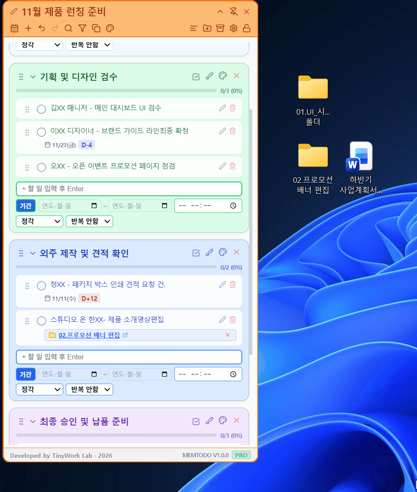
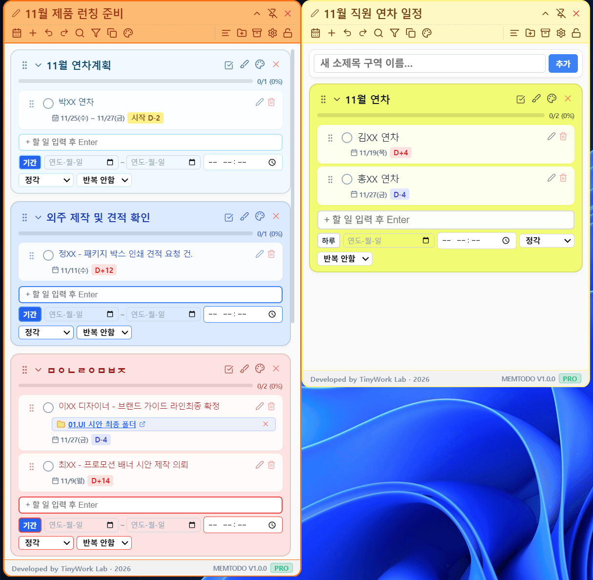
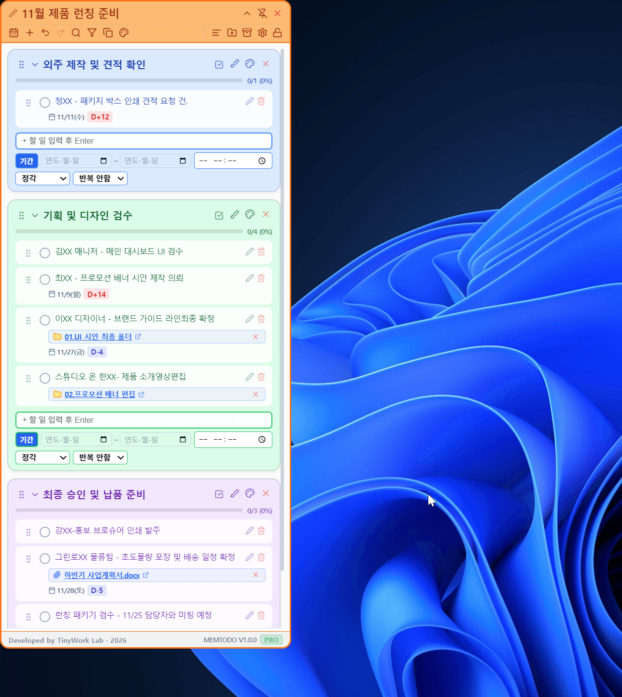
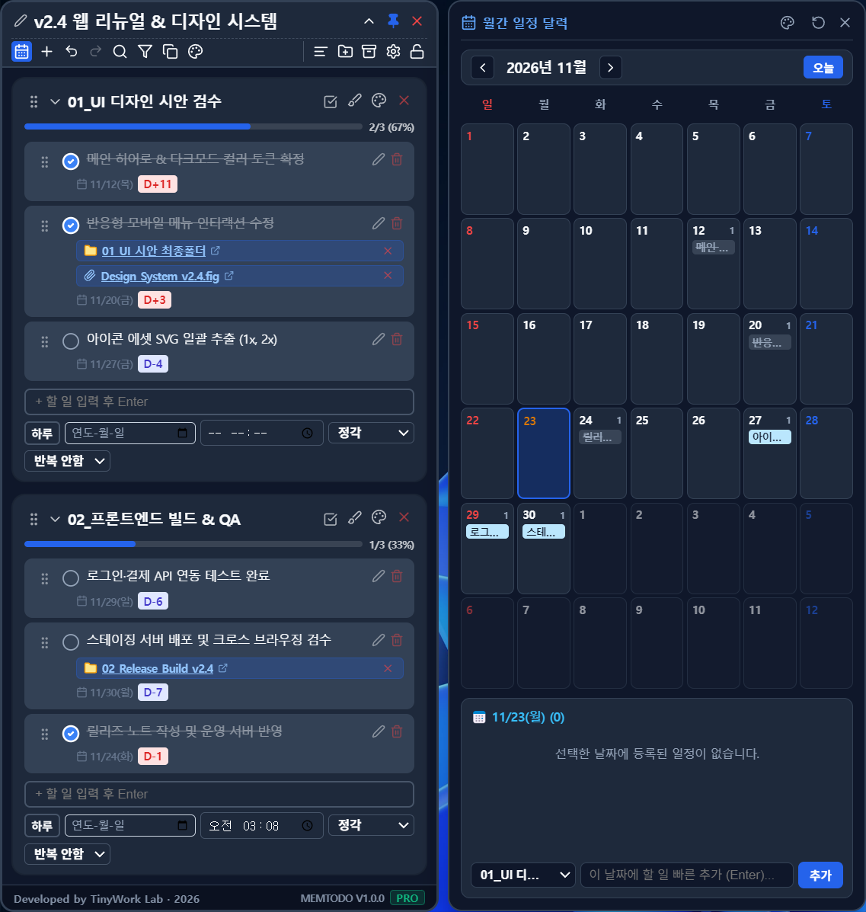
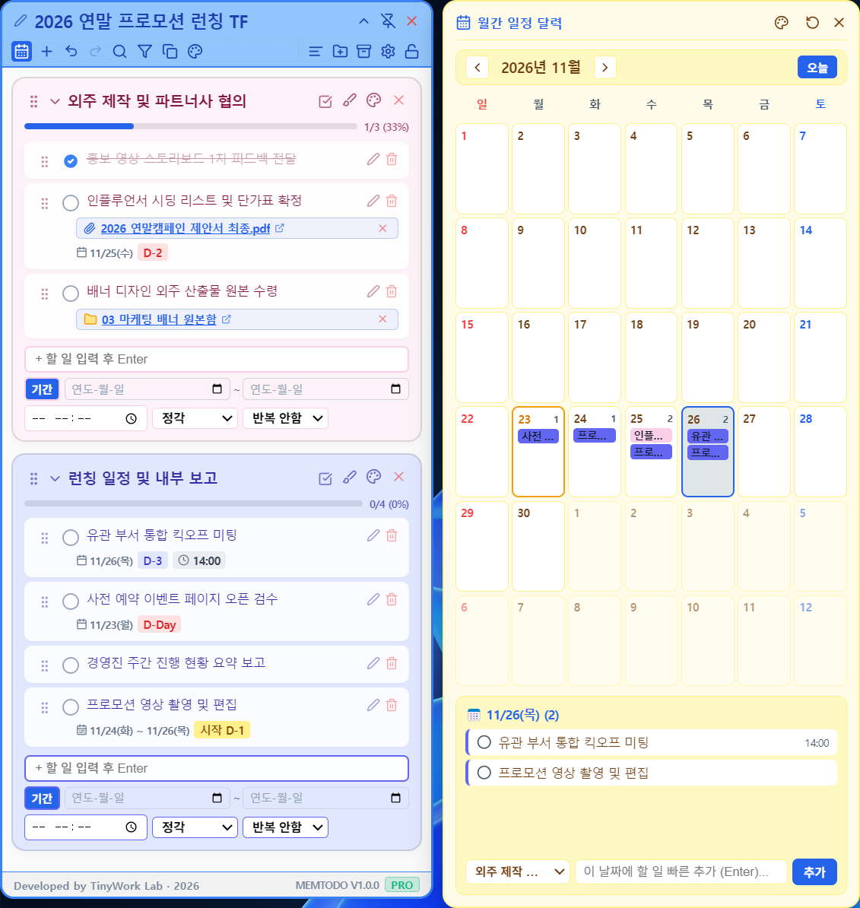
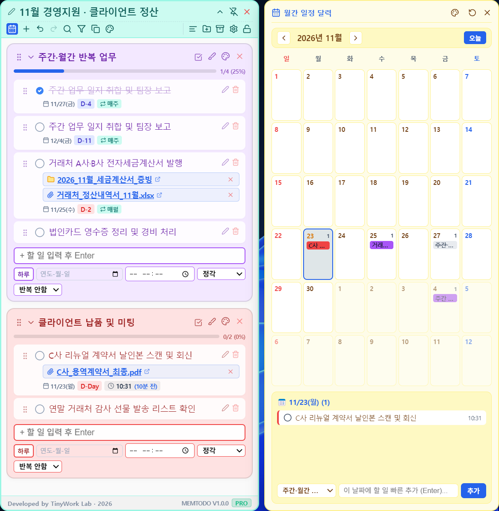
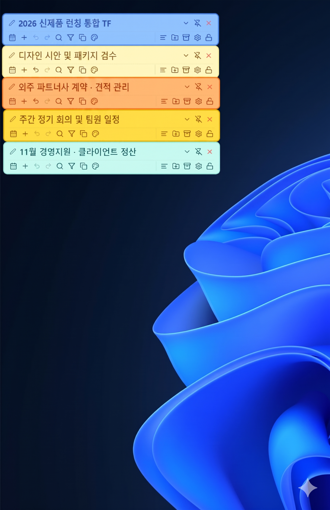

단순한 스티커 메모를 넘어 소제목별 할 일 진행률, 메모장 일체형 월간 달력, 파일·폴더 드래그 연결, 커스텀 마감 알림까지. 외부 서버 전송 없이 내 PC에 100% 안전하게 저장되는 초경량 데스크톱 워크스페이스입니다.
김민수 매니저 - 메인 대시보드 UI 시안 검수
이지은 디자이너 - 브랜드 가이드라인 최종 확정
스튜디오온 한지민 - 제품 소개 영상 편집 및 자막 작업
11/20(금) 10:00~15:00 런칭 패키지 최종 검수 미팅
파일·폴더 드래그 연결, 메모장 간 소제목·할 일 이동, 일체형 달력 하단 일정 등록까지 실제 워크플로우를 확인해 보세요.
작업 폴더나 PDF 문서를 할 일 카드 위로 드롭하면 링크 배지가 생성되며, 클릭 한 번으로 즉시 열립니다.

GIF 저장 파일명:소제목 그룹이나 다중 선택한 할 일을 다른 프로젝트 메모장으로 드래그해 손쉽게 업무를 재배치합니다.

GIF 저장 파일명:일체형 달력에서 날짜를 선택하고 하단 입력창에서 할 일을 바로 등록·적용해 D-Day까지 한 번에 관리합니다.

GIF 저장 파일명:바탕화면의 직관성과 전문 일정·파일 관리 기능을 하나로 결합했습니다.
| 비교 항목 | OS 기본 스티커 메모 | 일반 클라우드 할 일 앱 | MEMTODO PRO |
|---|---|---|---|
| 바탕화면 상시 고정 & 자석 정렬 | 수동 배치만 가능 | 별도 창·브라우저 필요 | 압정 고정 + 원클릭 자동 정렬 |
| 작업 폴더·파일 드래그 연결 | 지원 안 함 | 클라우드 업로드 필요 | 로컬 경로 즉시 연결·원클릭 열기 |
| 소제목 섹션 & 실시간 진행률 바 | 단순 텍스트 줄바꿈 | 일부 지원 | 소제목별 진행률 게이지 자동 계산 |
| 메모장 일체형 월간 달력 | 지원 안 함 | 별도 탭 전환 필요 | 메모장 좌·우 자동 스냅 결합 |
| 데이터 보안 (외부 서버 전송) | 로컬 저장 | 외부 클라우드 서버 저장 | 100% 로컬 PC 저장 · 서버 전송 0 |
| 요금 및 결제 방식 | 무료 (기능 제한) | 매월 정기 구독료 발생 | 1회 결제 평생 소장 · 구독료 없음 |
단순 텍스트 입력만 되는 기본 스티커 메모의 한계를 넘어,
실제 업무 파일과 마감 시간까지 한 화면에서 제어합니다.
소제목별 할 일 마감일 순차 정렬과 진행률 게이지를 지원합니다. Ctrl/Shift 다중 선택으로 여러 할 일을 한 번에 드래그 이동할 수 있습니다.
탐색기나 Finder에서 문서, 도면, 작업 폴더를 할 일 위로 끌어다 놓으세요. 폴더는 폴더 아이콘, 파일은 클립 아이콘으로 자동 구분되며 클릭 즉시 열립니다.
메모장 좌·우측 여유 공간을 자동 감지해 달력이 하나로 결합됩니다. 단일 마감일은 물론 시작일~종료일 기간 설정과 스마트 D-Day를 지원합니다.
놓치기 쉬운 OS 기본 알림 대신 화면 우측 하단에 전용 알림 카드가 뜹니다. 정각·10분 전·사용자 지정 분 설정과 알림창 표시 시간 조절을 지원합니다.
접기/펼치기 반복 시 폭 증가 오류를 고치고 접힌 폭 조절을 지원합니다. 설정 진입 시 자동 핀 해제, 마우스 오버 펼침 기본 OFF, 창 닫힘 후 트레이 클릭으로 마지막 메모 복구를 지원합니다.
유효하지 않은 즐겨찾기 경로 자동 감지와 통일된 경로 오류·업데이트 안내창을 제공합니다. 모든 데이터는 내 PC(storage.json)에 로컬 저장되며 JSON 백업/복원과 8개국어 UI를 지원합니다.
MEMTODO & FINDRUN 공식 통합 사용 설명서에서 Windows·macOS 설치 및 활용 팁을 확인하실 수 있습니다.
프로젝트 성격에 따라 다크모드·파스텔 테마·일체형 달력·원클릭 접기 배치를 조합해 나만의 데스크톱 컨트롤 타워를 만들어 보세요.

캡처 파일명:버전별 디자인 시안 폴더와 빌드 산출물 경로를 소제목별로 고정해 두고, 눈이 편안한 다크모드로 배치합니다.

캡처 파일명:좌측에 달력을 붙여 런칭 스케줄과 외주 미팅 기간을 한눈에 보고, 제안서·견적서 파일을 각 태스크에 묶어둡니다.

캡처 파일명:매주·매월 반복되는 보고와 세금계산서 발행 일정을 자동 반복으로 등록하고, 화면 우측 하단 알림창으로 마감 실수를 방지합니다.

캡처 파일명:여러 프로젝트를 동시에 진행할 때 메모장을 바 형태로 콤팩트하게 접어 바탕화면 한쪽에 정렬해 두고, 필요할 때만 클릭해 즉시 펼쳐 봅니다.
매일 책상 앞에서 파일과 마감을 다루는 사용자들이 가장 만족한 포인트를 모았습니다.
"프로젝트 폴더를 할 일에 끌어다 놓고 클릭 한 번으로 바로 여는 기능이 정말 편합니다. 탐색기 뒤지는 시간이 확 줄었어요."
"사내 보안 규정 때문에 클라우드 메모 앱을 못 썼는데, 외부 서버 전송 없이 내 PC에만 저장되면서 달력까지 붙어 있어서 바로 정착했습니다."
"매달 나가는 구독료 앱들에 지쳐 있었는데 9,900원 한 번 결제로 평생 소장할 수 있어서 부담 없이 구매했습니다. 가볍고 빠릅니다."
"우측 하단에 따로 뜨는 마감 알림창 덕분에 외주 납품 시간이나 주간 보고를 한 번도 놓친 적이 없습니다. 다크모드 디자인도 깔끔해요."
모든 설치 파일에는 무료 버전과 7일 PRO 무료 체험이 기본 포함되어 있습니다.
일반 데스크톱 및 노트북 PC용 표준 설치 파일입니다.
2020년 말 이후 출시된 M1, M2, M3, M4 칩 탑재 맥북·아이맥 전용입니다.
2020년 이전 출시된 Intel 칩 탑재 구형 맥북·아이맥 전용입니다.
💡 지원 사양: Windows 10/11 (64-bit) · macOS 12 Monterey 이상 (Apple M1~M4 / Intel)
Mac에서 처음 실행 시 '손상되었기 때문에 열 수 없습니다'가 뜨면 응용 프로그램 폴더로 옮긴 뒤 터미널에서 xattr -cr /Applications/MEMTODO.app 입력
설치 후 앱 상단 왕관(👑) 아이콘에서 7일 PRO 무료 체험을 먼저 써보신 뒤 결정하실 수 있습니다.
가벼운 단일 메모와 기본 할 일 관리를 원하는 분께 적합합니다.
1 PC/Mac 영구 귀속 · v1.x 모든 기능 업데이트 무료 포함
결제 전 이용약관 및 라이선스·환불 정책을 확인해 주세요.
기업 다수 구매 문의:
따뜻한 커피 한 잔의 자발적 후원은 1인 개발자가 광고 없는 초경량 유틸리티를 지속적으로 업데이트하고
무료 툴을 제작하는 데 큰 힘이 됩니다.
자주 여는 폴더와 문서를 단축키 한 번으로 검색하고 즉시 실행하세요. MEMTODO와 함께 쓰면 시너지가 극대화됩니다.